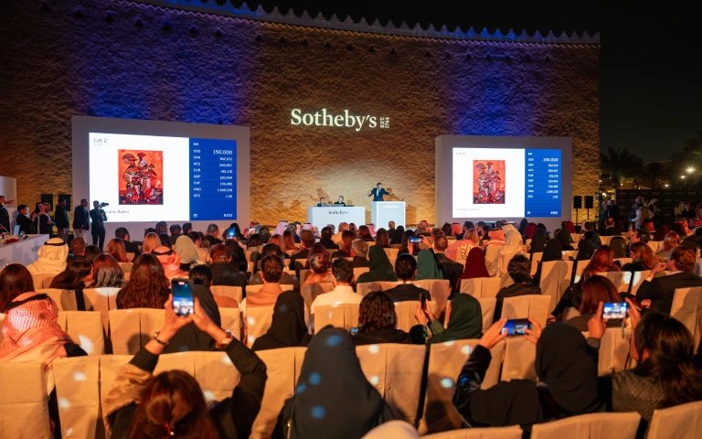
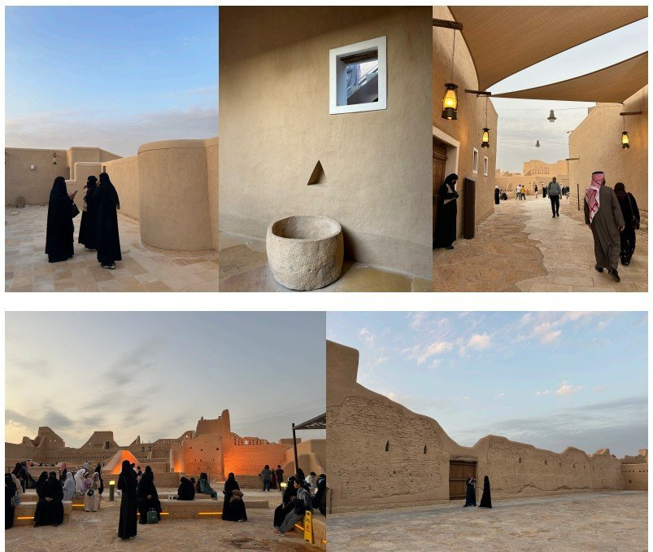
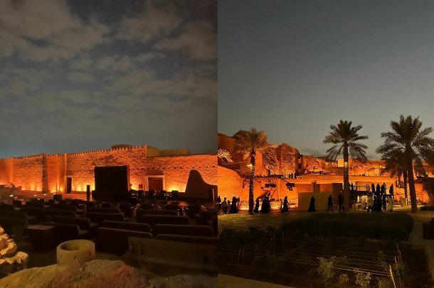
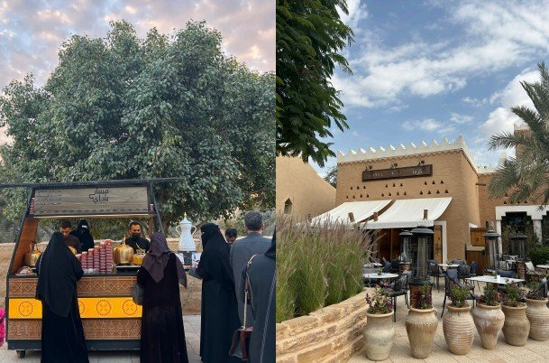
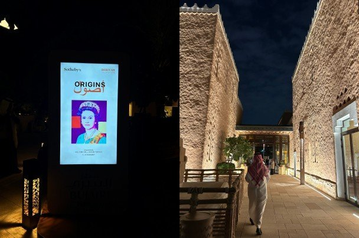
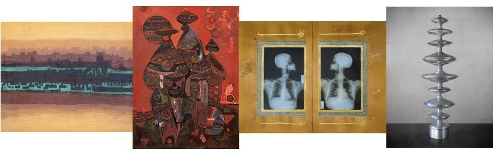

세계적인 경매사 소더비(Sotheby's)가 2025년 2월 사우디아라비아 디리야(Diriyah)에서 첫 경매를 열었다. 1744년 런던에서 설립된 소더비는 크리스티(Christie's)와 함께 세계 양대 경매사로 꼽힌다. 280년 가까운 역사 속에서 미술품과 수집품 거래를 이끌어왔고, 뉴욕·파리·홍콩 등 주요 문화 도시에서 경매를 주관하며 국제 미술 시장의 흐름을 선도해왔다. '오리진스(Origins)'라는 타이틀로 진행된 이번 경매는 총 1,730만 달러의 낙찰가를 기록했으며 45개국에서 온 컬렉터들이 참여했다. 출품작에는 주얼리와 시계, 현대미술 작품, 스포츠 기념품 등이 포함됐다. 특히 구매자의 약 ⅓이 사우디 거주자로 집계돼 현지 컬렉터층의 성장과 참여를 보여줬다.

▲ 소더비 사우디 첫 경매 현장 — 출처: 소더비
디리야, 사우디 왕국의 기원지
경매가 열린 디리야는 사우디아라비아 역사에서 특별한 의미를 지닌다. 18세기 초 무함마드 빈 사우드(Muhammad bin Saud)가 정착하며 첫 도읍을 세운 곳으로 '사우디 왕국의 발상지'로 불린다. 이 지역의 옛 도읍지인 앗투라이프(At-Turaif)는 전통 나즈디(Najdi) 양식의 흙벽돌 건축으로 지어진 도시 유적지이며 2010년 유네스코 세계문화유산에 등재됐다. 현재는 리야드 광역권에 포함되지만 제1사우디국의 수도였던 디리야로서의 역사적 정체성을 이어가고 있다.

▲ 앗투라이프 유적지 내부 — 출처: 통신원 촬영
오늘날 디리야는 이러한 유산을 보존하면서도 현대적 문화지구로 변모했다. 특히 디리야 게이트 개발청(DGDA, Diriyah Gate Development Authority)이 추진하는 디리야 게이트 프로젝트는 부자이리 테라스(Bujairi Terrace)를 비롯해 문화시설, 레스토랑, 미술관 등을 조성하며 전통 보존과 관광산업 육성을 결합한 대표 사례로 꼽힌다. 부자이리 테라스와 앗투라이프는 와디 하니파(Wadi Hanifa) 계곡을 사이에 두고 마주 보고 있다. 그래서 부자이리 테라스에서 식사하거나 걸으면 바로 눈앞에 앗투라이프의 성곽을 볼 수 있다.

▲ 앗투라이프 유적지 전경 — 출처: 통신원 촬영
이번 소더비 경매는 디리야 내 250석 규모의 야외 원형극장에서 개최됐다. 좌석이 모두 매진된 것은 물론 입석 관객까지 가득 차 뜨거운 열기 속에서 진행됐다. 경매 직전에는 부자이리 테라스에서 출품작 프리뷰 전시가 함께 열려 시민과 방문객 누구나 작품을 감상할 수 있도록 개방됐다. 르네 마그리트(René Magritte), 뱅크시(Banksy), 페르난도 보테로(Fernando Botero) 같은 세계적 거장들의 작품부터 알 살림, 라드위 등 사우디 대표 작가들의 작품까지 한자리에 선보이며 국제 경매의 현장을 현지 대중이 직접 경험할 수 있는 드문 기회를 제공했다.

▲ 디리야 부자이리 테라스 — 출처: 통신원 촬영

▲ (좌) 소더비 프리뷰 전시 현장 포스터, (우) 전시장 입구 — 출처: 통신원 촬영
이번 경매에는 세계적으로 명성 높은 서구 작가의 작품도 다수 출품돼 국제적 위상을 드러냈다. 르네 마그리트와 뱅크시의 작품은 각 120만 달러에 낙찰됐고 페르난도 보테로의 작품은 100만 달러를 기록했다. 미국 미니멀리즘 거장 제임스 터렐(James Turrell)의 설치 작품은 66만 달러, 파블로 피카소(Pablo Picasso)의 작품은 약 20만 달러에 판매되며 글로벌 컬렉터들의 눈길을 끌었다. 또한 디지털 아티스트 레픽 아나돌(Refik Anadol)의 <머신 할루시네이션즈 — 스페이스(Machine Hallucinations – Space)>는 약 90만 달러에 낙찰되며 신세대 컬렉터들의 관심을 확인시켰다.
사우디 작가들의 활약
무엇보다 이번 경매에서 돋보인 것은 사우디 작가들의 성과였다. 사우디 현대미술의 선구자로 꼽히는 모하메드 알 살림(Mohammed Al Saleem)의 작품 <오 갓, 어너 갓, 어너 뎀 엔드 두 낫 어너 언 에너미 오버 뎀(O' God, Honor Them and Do Not Honor an Enemy Over Them, 1977)>은 약 66만 달러에 낙찰되며 사전 추정가의 세 배를 기록했다. 사우디 모더니즘을 대표하는 압둘할림 라드위(Abdulhalim Radwi)의 <언타이틀드(Untitled, 1984)>는 약 26만 4,000달러에 판매되며 작가의 최고가 기록을 새로 썼다. 또한 동시대 미술을 이끄는 아흐메드 마테르(Ahmed Mater)의 <일루미네이션 딥티크(Illumination Diptych, Makkiah Tale, 2012)>는 10만 2,000달러, 여성 작가 마하 말루(Maha Malluh)의 <마가디르(Magadeer, 2024)>는 8만 4,000달러에 낙찰되며 모두 예상가를 웃도는 결과를 남겼다.

▲ 좌측부터 모하메드 알살림, 압둘할림 라드위, 아흐메드 마테르, 마하 말루 작품 — 출처: 소더비
이처럼 네 명의 사우디 작가가 모두 의미 있는 성과를 기록한 사실은 현지 미술 시장이 전시와 축제를 넘어 본격적인 거래와 투자 대상으로 부상하고 있음을 보여준다. 동시에 국제 무대에서 사우디 작가들의 위상과 잠재력이 점점 더 인정받고 있다는 점을 확인시켰다.
사우디 미술 시장, 국제 무대로 확대
이번 경매는 단순한 판매 실적을 넘어 사우디가 국제 미술 시장의 지형 속에 편입되는 흐름을 보여주는 신호탄이자 사우디 비전 2030 전략 속 문화·관광산업 육성 전략의 흐름과도 맞닿아 있다. 런던·뉴욕·홍콩과 같은 기존 경매 허브에 이어 디리야가 새로운 거점으로 주목받고 있으며, 소더비는 리야드 도심의 알파이살리야 타워(Al Faisaliah Tower)에 상설 오피스를 열며 장기적 활동을 선언했다. 이는 일회성 이벤트가 아니라 사우디 미술 시장에서의 지속적 존재감을 확보하고자 하는 전략이다. 이러한 흐름 속에서 국제 컬렉터와 현지 작가, 사우디 컬렉터들이 교류하는 접점이 점점 확대될 전망이다.
사진 출처 및 참고자료
통신원 촬영
Diriyah Gate Development Authority (DGDA), https://www.dgda.gov.sa/en
Diriyah Project – Vision 2030, https://www.vision2030.gov.sa/en/explore/projects/diriyah
Sotheby's Riyadh Office, https://www.sothebys.com/en/about/locations/riyadh
Sotheby's (2025. 2. 14). Sotheby's Inaugural Auction in Diriyah Achieves $17M
Financial Times (2024. 11. 7). Sotheby's announces new outpost in Saudi Arabia
Vogue Arabia (2025. 2. 11). Showstoppers at Sotheby's Debut Auction in Saudi Arabia